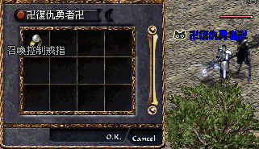

|
2003年5月7日
香港出現召喚控制戒指
鳴謝香港太陽神玩家卍復仇勇者卍提供資料！他數天前在傲慢塔成功打到召喚控制戒指，掉下怪物是幼龍呢！

韓國測試伺服器5月7日更新內容
來源：Lineage Playforum
日文翻譯：Lineage Report
1. 新手區域加速NPC調整到適合的位置了。
2. 加入了"/mail"的指令，可以選擇接受來信而否。
3. 修正了使用"/music|sound[on/off]"指令時會出現調整音量選項，而需要再次手動調整音量的問題。
4. 假如使用決鬥指令"/duel"並戰死，有機會會掉下道具。
5. 非攻城戰的血盟戰爭結束後，不會在全世界的畫面顯示訊息。
而在物件描述檔中，加入了"古代變身魔杖"的道具。
另外加入了以下物件的描述（在鑑定該物件後會出現的訊息）：
這是炎魔所使用的劍。假如經過重新精製後此劍可能可以再次使用。
這是炎魔的眼睛。當中感到有強大的魔法力量。
這是炎魔的爪。這好像非常堅硬，可能可以用來製作某些東西。
這是炎魔的心臟。當中感到有地獄之火。
擁有炎魔憤怒的劍，此劍在經特別精製後耐久力大幅強化。在任何場合下均不會損壞。
擁有炎魔魔力的水晶球，能夠增加一定程度的MP上限。
擁有炎魔銳利感覺的弓，此弓有很強的靈氣包圍著。
擁有炎魔銳利感覺的劍，此劍有很強的靈氣包圍著。
擁有炎魔不死感覺的劍，此劍有很強的靈氣包圍著。
古代君主封印炎魔所使用的鑰匙。
古代騎士封印炎魔所使用的鑰匙。
古代妖精封印炎魔所使用的鑰匙。
古代魔法師封印炎魔所使用的鑰匙。
雖然不知道是由誰製作，此鑰匙會決定這個世界的命運。
這是古代所封印炎魔的物品。雖然不知製作人是誰，但他好像就在某像。 |
假如大家心水清的話，應該知道新任務的相關道具、首領及相關獎勵吧！ |